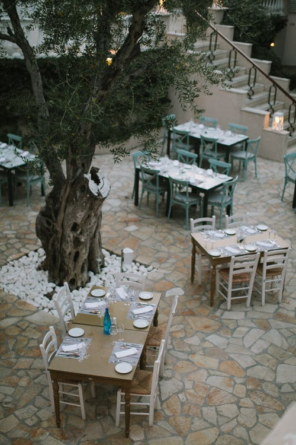

The recipes listed here are ones that I have developed myself. In some cases, I started with a recipe found in a cookbook or magazine, but over time, I've adapted it enough to call it my own. Bon Appetit!
The site also includes links to my favorite online cooking resources. One day, I hope to include a section of restaurant reviews.
If you have recommendations, feel free to email me at jen@example.com .
